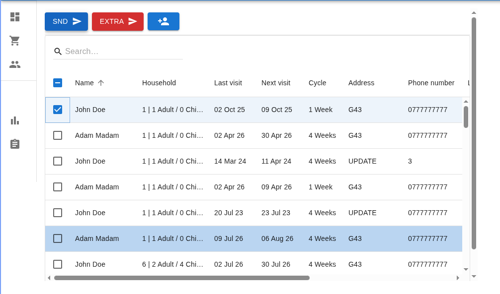
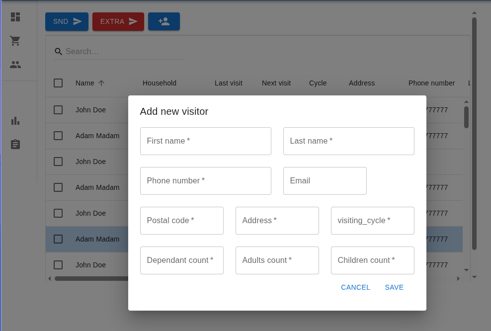
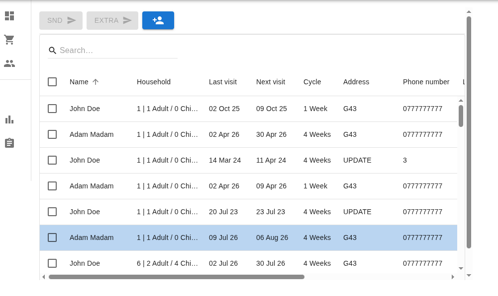
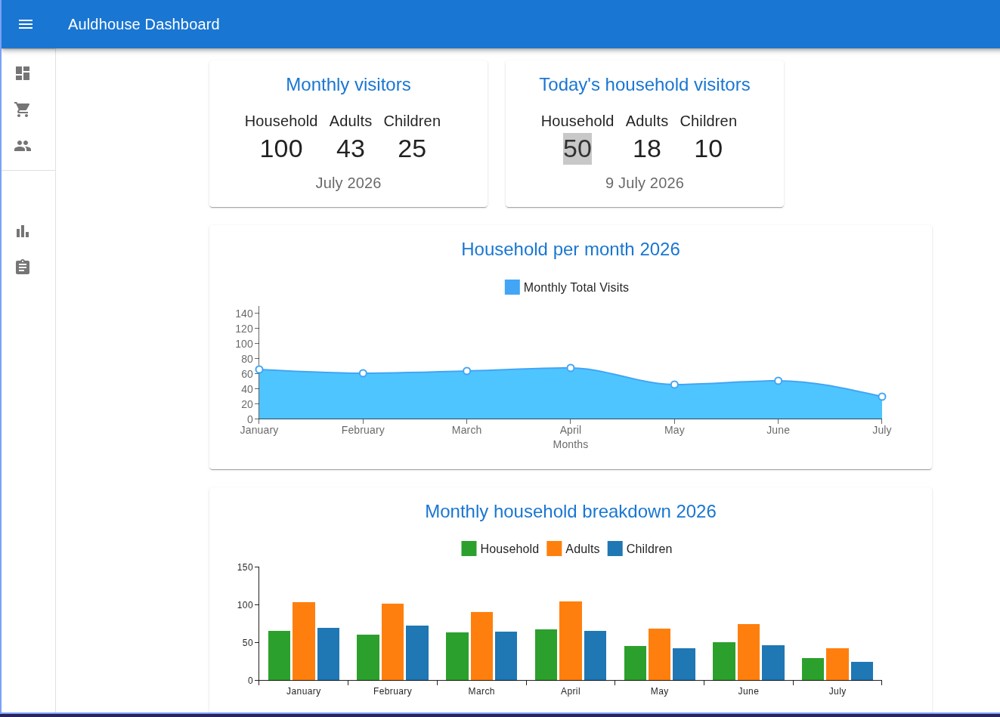

Background
Auldhouse Community Church runs a food bank that hundreds of people rely on. Before this system existed, everything ran on paper: a person at the door checked loose, hand-updated sheets every Thursday to see whether each visitor was in the right cycle to collect a parcel 1, 2, 3 or 4 weeks apart depending on the household. That manual check created long queues, with people waiting outside in the rain while staff cross-referenced names by hand.
I was a food bank user before I was the developer
Every first Thursday of the month, I collected my own parcel from Auldhouse, standing in the same queue as everyone else. Over time I saw exactly how the process worked and where it broke down. Someone at the door checked hundreds of names against hand-updated paper sheets to confirm each person's cycle, and anyone whose file wasn't current, or who arrived outside their cycle, had to be sorted out on the spot. That created long queues and real discontent, with people left standing outside in the rain.
I used that standing as a member of the community to build trust with the pastor and the food bank director, and proposed a digital system that could gradually remove the queues, cut the hours spent on Excel updates and printing, and simplify reporting to funders. To help make the case, I pointed to Castlemilk Pantry a similar project I already had underway, at the requirements stage at the time as proof I could deliver this. They agreed.
We settled into a monthly meeting cadence, and I brought an early mockup of what the app could look like to guide those first conversations. Requirements were first prioritised with Claire, who initiated the project on the food bank's side before she left; Roma Madden then took over food bank leadership and carried requirements gathering forward with me from there.
A different priority list than Castlemilk: Roma's biggest ask was simplicity a membership database and a straightforward registration process, with no SMS or email needed for food bank users. The feature that mattered most was the one that had been draining the most staff time: instantly looking up a visitor and confirming, in one click, whether they were within their cycle or needed an emergency parcel.
Sole developer, from requirements to VPS
Claire and Roma owned the "what" and "why," across a leadership handover partway through. I owned the "how" end to end, including the later migration off AWS.
I owned
- Monthly requirements meetings and mockups with food bank leadership
- All coding, testing, and deployment
- Translating stakeholder conversations into technical requirements
- Auth & authorization architecture (Firebase Auth, RBAC, token-protected APIs)
- Migrating hosting from AWS EC2 to a self-managed VPS with Docker and Dokploy
- Linux server administration and backup automation
Claire → Roma Madden (Foodbank Leadership) & Pastor
- Claire initiated the project and set the first requirements, before leaving the role
- Roma Madden took over leadership and re-prioritised requirements around attendance tracking
- Pastor provided organisational buy-in to move forward
- Domain expertise on food bank operations and visitor cycles
A monthly cadence built around volunteer availability
Unlike a weekly sprint model, Auldhouse's leadership could only meet once a month, so I structured requirements gathering and reviews around that rhythm bringing an updated mockup or working build to each session rather than smaller, more frequent check-ins. When leadership handed over from Claire to Roma Madden mid-project, I used that same monthly meeting structure to re-confirm priorities with the new stakeholder rather than assuming continuity.
What the system does
Attendance & cycle verification lookup
The most time-consuming problem the old paper system had: staff needed to instantly confirm whether a visitor was due their parcel. This feature lets staff look up a food bank user, see their name, date of last visit, date of next eligible visit, and cycle (1, 2, 3 or 4 weeks), if they are not members register them rapidly and then mark attendance with a single selection. If someone arrives early or outside their cycle, the system flags and records it as an emergency provision instead of turning them away.


Membership database
A simple, searchable database of food bank users replacing the loose paper sheets previously used to track hundreds of households. No SMS or email is built in for this client, Roma prioritised a straightforward record system over communication features.

Reporting
Weekly, monthly, and annual reports for funders, plus a downloadable Excel export listing every visitor for a given week generated instantly instead of compiled by hand at the end of each reporting period.

Automated weekly digest email
Every Thursday, an automated email is sent to the food bank director with the complete list of that week's visitors removing the need to manually compile attendance at the end of each session.

Dashboard
A clear view of visitors and their household register, broken down weekly and monthly, alongside monthly visitor totals giving leadership visibility they never had with paper records.

How it's built
Implemented Firebase Authentication for login and sign-up, with secure token-based sessions and every API endpoint protected by server-side verification. On top of that, I built a Role-Based Access Control (RBAC) model so different staff roles get different levels of access — the same authorization pattern I reused across this project and Castlemilk.
When Roma Madden took over food bank leadership from Claire, priorities shifted toward a lighter, attendance-first tool rather than the fuller membership/communication feature set on Castlemilk. Designing the system to flex around a change in stakeholder without a full rebuild was one of the more valuable lessons from this project.
The site and data services originally ran on AWS EC2. As costs became a concern for the church, I migrated everything to a self-managed VPS using Docker and Dokploy an approach I learned by attending a Codebar workshop specifically to find a cheaper deployment path. The move cut ongoing hosting costs and made deployments, maintenance, and backups noticeably easier to manage. It strengthened my hands-on experience with containerisation, Linux server administration, and backup automation.
What changed
Launched July 2024, replacing a paper-based doorway check that had run for years and caused real discontent among people already dealing with hardship.
What I'd do differently
The leadership handover from Claire to Roma cost some rework, since requirements had to be re-confirmed partway through. Next time, I'd document a lighter "minimum feature set" upfront, so a change in stakeholder leadership costs less rebuilding. I'd also plan the AWS-to-VPS hosting migration earlier — we're now planning a more updated visual version of the app on the same self-managed infrastructure.